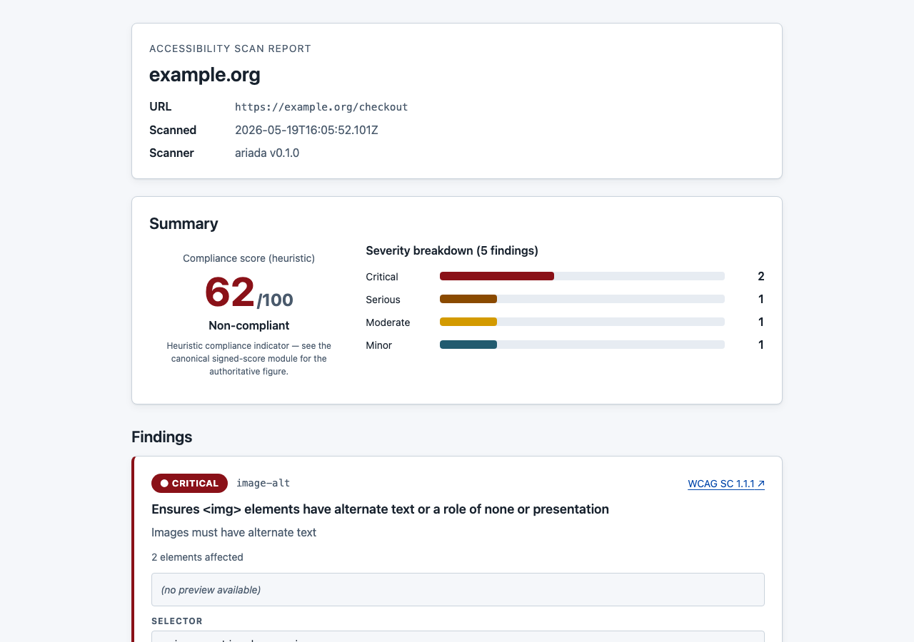
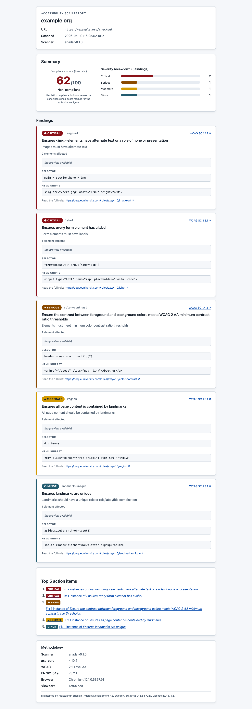
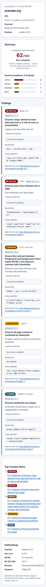
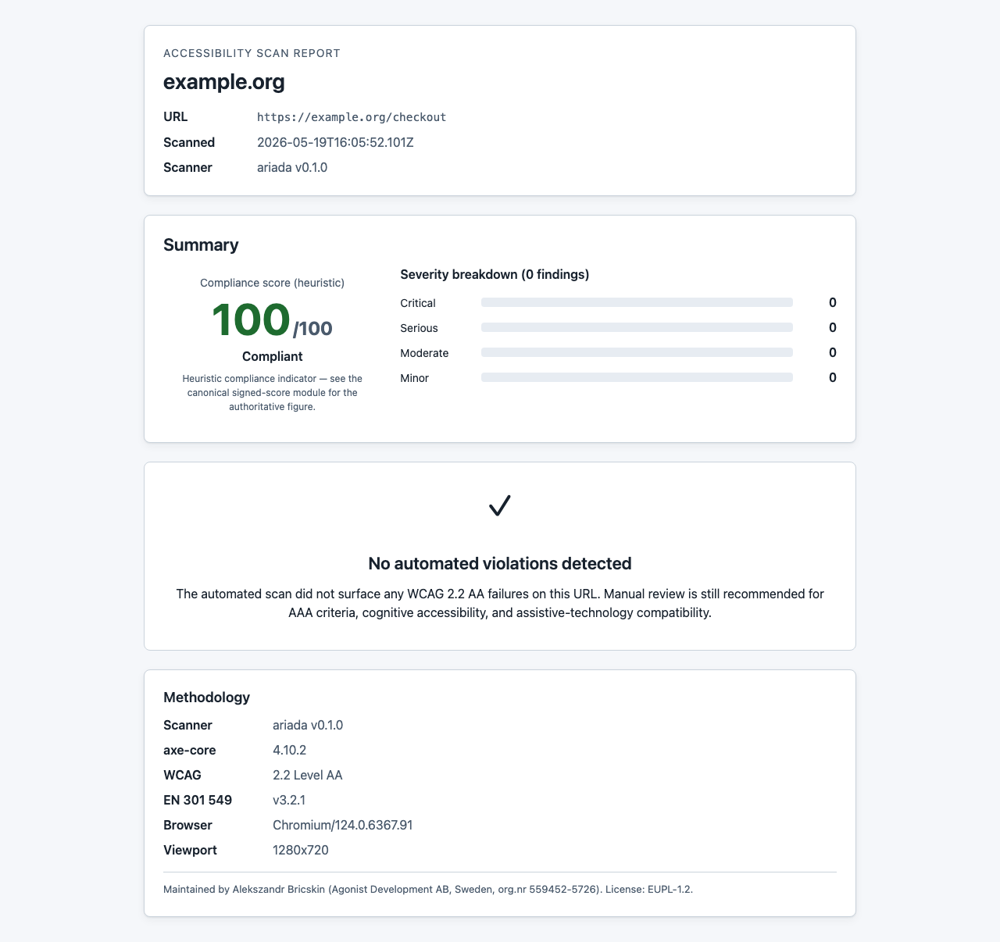

What this module is
@ariada-org/scan-report-html is a rendering
library: it accepts a scan result object (the output of
@ariada-org/core-engine) and emits a fully self-contained HTML file
that can be opened in any browser, emailed, checked into a repository, or served
as a CI artefact — with no runtime dependencies.
packages/scan-report-html. The screenshots below show the real
rendered output produced by the automated test harness.
- Type
- npm library —
renderScanReport(input: ScanReportInput): string→ HTML string - Where it lives
packages/scan-report-html; published to npm as@ariada-org/scan-report-html- Runtime deps
- Zero — the output is a single self-contained HTML file with inlined CSS
- Accessibility
- The rendered report is itself built to WCAG 2.2 AA — semantic landmarks, one h1, table headers, keyboard-operable no-JS lightbox
- Status
- Published at 0.1.0 with Sigstore provenance; API stable
Who uses it & why
| Role | How they use it | Value |
|---|---|---|
| CI/CD pipeline engineer | Attaches a human-readable HTML report as a CI artefact on every scan run | High — table-stakes for audit trails |
| Developer | Opens the report locally after a CLI scan; shares it with stakeholders | High |
| Compliance team | Archives a dated self-contained HTML file per site per quarter | High |
| Platform / SaaS builder | Embeds the renderer in their own accessibility dashboard to generate reports on demand | Medium |
The renderer is a utility module consumed by the CLI, the browser extension, the web demo, and any third party integrating Ariada scan results.
Distribution — free and open source
The scan-report renderer is free and open source under the EUPL-1.2 licence. There is no account and no runtime network calls to use the renderer.
| Capability | Availability |
|---|---|
| Render any scan result to self-contained accessible HTML | Free · open source |
| All six compliance domains in the rendered output | Free · open source |
| Zero runtime dependencies in the rendered file | Free · open source |
| WCAG 2.2 AA-accessible output by construction | Free · open source |
Getting started
- Discover — the CLI and browser extension both produce reports via this package; users encounter it as the exit artefact.
- Adopt —
npm install @ariada-org/scan-report-htmland callrenderScanReport(result). - Archive — commit the self-contained HTML per sprint or attach it as a CI artefact for the compliance audit trail.
- Build on it — the package is importable in any Node or Bun project; its zero-dependency output works anywhere a browser can open a file.
Documentation & help — current state
- API
renderScanReport(input: ScanReportInput, options?: RenderOptions): string— returns the full HTML string. Pass an output directory in the options to write it to disk instead.- Docs site
- The documentation site needs a "HTML Report" page showing the API, the output structure, and how to embed the file in GitHub Actions as an artefact.
- README
- Published at 0.1.0 with a minimal README; a full quick-start guide is the top docs follow-up.
AI chat & digital-adoption helpers — plan
ScanReportInput object — the renderer
itself remains a deterministic template engine.Screenshots — click any image to open it full size
From the end-to-end test harness. Each thumbnail opens a full-size, zoomable overlay.




Assessment summary
Full assessment is tracked separately. Headline: the renderer passes its own axe-core gate (the report must be accessible — the scanner's output cannot itself be inaccessible). Open gaps: no PDF export path yet; the populated report's table scrolls horizontally on 375 px without a sticky first column.